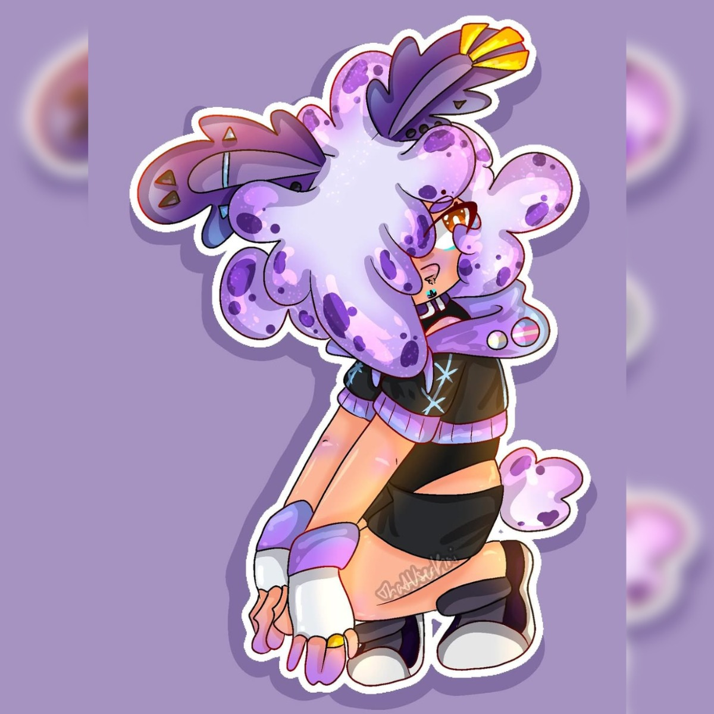
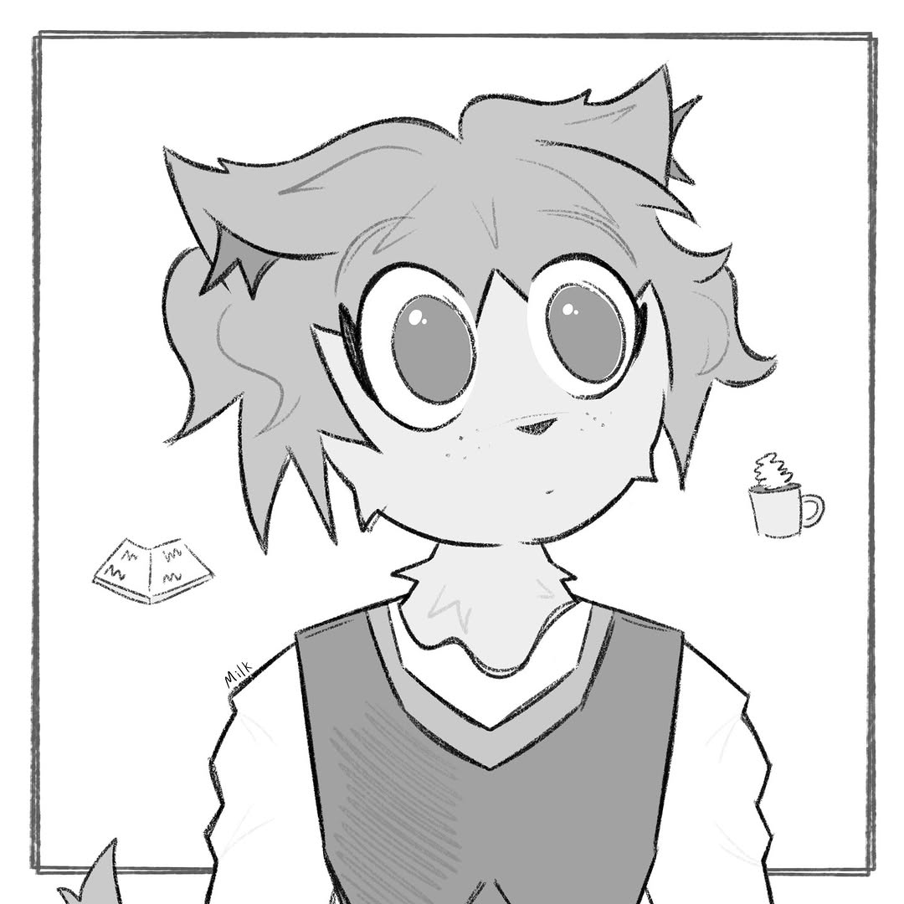

Val is a 2D Digital Illustrator and aspiring Storyboard Animator and Character Designer. He has been drawing original characters and fanart since he was 13. He previously attended Ivy Tech Community College and graduated with an Associates of Fine Arts in 2025. Currently, he is studing Media Arts in Digital Storytelling at Indiana University Indianapolis.

Caleb is a 2D Digital Illustrator and Character Designer. He specializes in making furry characters, and is clearly gay. He previously attended Ivy Tech Community College and graduated with an Associates of Visual Communications in 2025. Currently, he is studying Media Arts & Science, specializing in Digital Storytelling at Indiana University Indianapolis.